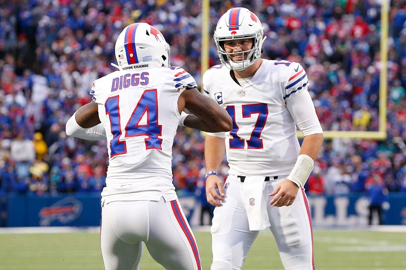

The beginning of the 2010s for the Bills was defined by the ongoing playoff drought. Despite some solid seasons with players like Ryan Fitzpatrick and Marcell Dareus, the Bills couldn't manage to crack a playoff spot. This continued through multiple more attempts at finding a quarterback, with chances given to EJ Manuel, Tyrod Taylor, and others. The 2015 season was the first season under the new owners, the Pegula family. In 2017, head coach Sean McDermott and general manager Brandon Beane were hired. This marked a turning point as for the first time in 17 seasons, the Bills made the playoffs in 2017. In 2018, the Bills drafted quarterback Josh Allen. Allen had a decent rookie campaign, but the Bills did not make the playoffs. The Allen-led Bills rebounded in 2019, with a playoff appearance, but wild card round loss to the Houston Texans. In 2020, The Bills traded for wide reciever Stefon Diggs, and after another strong season, the Bills won the AFC East. After a wild card round win against the Colts and Divisional round win against the Ravens, they fell to the Chiefs in the AFC championship game. 2021 was a similar season for the Bills, posting a strong season, but falling again to the Chiefs, this time in the divisional round. In 2022, the Bills faced a lot of adversity off the field, but still managed to make the divsional round, where they lost to the Bengals. In 20223, they suffered another Divisional round loss to the Chiefs.
The 2010s-Present